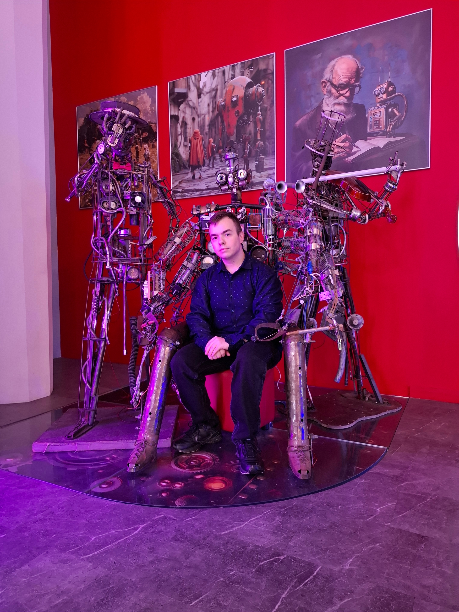

05 / 06 · Автор проекта
О
разработчике
Немного о человеке, которому интересны города, технологии и то, как они соединяются в одном проекте.
ИВТ·2 ГРУППА

ЕИ
ФОТОГРАФИЯРАЗРАБОТЧИКА
Знакомство
Ярославцев
Егор Игоревич
Изучаю информационные технологии и пробую применять знания в практических проектах. Этот сайт — учебная работа о Харцызске, его истории, городских пространствах и культурной жизни. При создании проекта я уделил внимание структуре страниц, семантической разметке и адаптивному дизайну.
Инструменты и навыки
Технологии в работе
Python100%
C++90%
C#97%
HTML100%
Проценты отражают самооценку в рамках учебного проекта.
Вне кода
Что вдохновляет
Люблю замечать детали, изучать места и превращать идеи в работающие решения. Особенно увлекает сочетание логики, визуального порядка и небольшой исследовательской работы.